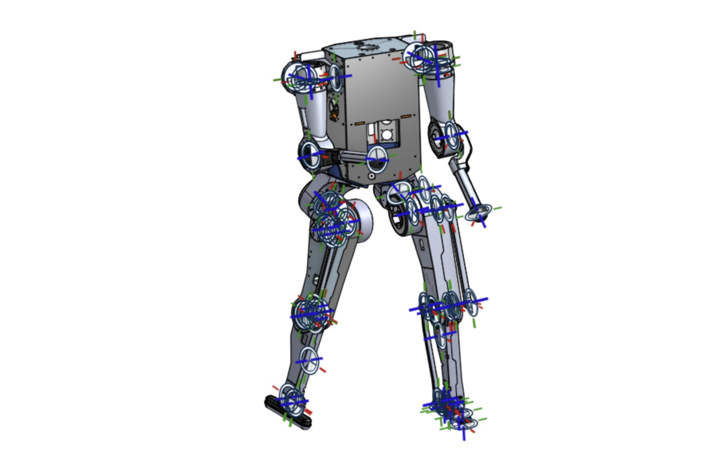

← All Projects

Dash — Brushless Motor Driver & Electrical Stack
Motor ControlDash is a high-power brushless motor driver built for a new humanoid robot platform, rated at 48 volts and 70 amps continuous — enough to drive the large actuators needed for full-body humanoid motion.
In addition to the motor driver, I am designing the broader electrical stack for the robot, including power distribution, communication backplane, and sensor integration.
Currently working on an Ethernet-to-CAN-FD interface board in Altium Designer, which will bridge the robot's high-level compute with the low-level motor and sensor network.